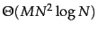
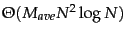
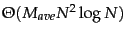
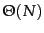
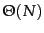

In low dimensions, more aggressive optimizations are possible that make the computation of most pairwise similarities unnecessary (Exercise 17.10 ). However, no such algorithms are known in higher dimensions. We encountered the same problem in kNN classification (see Section 14.7 , page 14.7 ).
When using GAAC on a large document set in high dimensions, we have to take care to avoid dense centroids. For dense centroids, clustering can take time
 where  is the size of the vocabulary, whereas complete-link clustering is
 where is the average size of the vocabulary of a document. So for large vocabularies complete-link clustering can be more efficient than an unoptimized implementation of GAAC. We discussed this problem in the context of
is the size of the vocabulary, whereas complete-link clustering is
 where is the average size of the vocabulary of a document. So for large vocabularies complete-link clustering can be more efficient than an unoptimized implementation of GAAC. We discussed this problem in the context of  -means clustering in Chapter 16 (page 16.4 ) and suggested two solutions: truncating centroids (keeping only highly weighted terms) and representing clusters by means of sparse medoids instead of dense centroids. These optimizations can also be applied to GAAC and centroid clustering.
-means clustering in Chapter 16 (page 16.4 ) and suggested two solutions: truncating centroids (keeping only highly weighted terms) and representing clusters by means of sparse medoids instead of dense centroids. These optimizations can also be applied to GAAC and centroid clustering.
Even with these optimizations, HAC algorithms are all  or
or
 and therefore infeasible for large sets of 1,000,000 or more documents. For such large sets, HAC can only be used in combination with a flat clustering algorithm like
and therefore infeasible for large sets of 1,000,000 or more documents. For such large sets, HAC can only be used in combination with a flat clustering algorithm like  -means. Recall that
-means. Recall that  -means requires a set of seeds as initialization (Figure 16.5 , page 16.5 ). If these seeds are badly chosen, then the resulting clustering will be of poor quality. We can employ an HAC algorithm to compute seeds of high quality. If the HAC algorithm is applied to a document subset of size
-means requires a set of seeds as initialization (Figure 16.5 , page 16.5 ). If these seeds are badly chosen, then the resulting clustering will be of poor quality. We can employ an HAC algorithm to compute seeds of high quality. If the HAC algorithm is applied to a document subset of size  , then the overall runtime of
, then the overall runtime of  -means cum HAC seed generation is . This is because the application of a quadratic algorithm to a sample of size
-means cum HAC seed generation is . This is because the application of a quadratic algorithm to a sample of size  has an overall complexity of . An appropriate adjustment can be made for an
has an overall complexity of . An appropriate adjustment can be made for an
 algorithm to guarantee linearity. This algorithm is referred to as the Buckshot algorithm . It combines the determinism and higher reliability of HAC with the efficiency of
algorithm to guarantee linearity. This algorithm is referred to as the Buckshot algorithm . It combines the determinism and higher reliability of HAC with the efficiency of  -means.
-means.